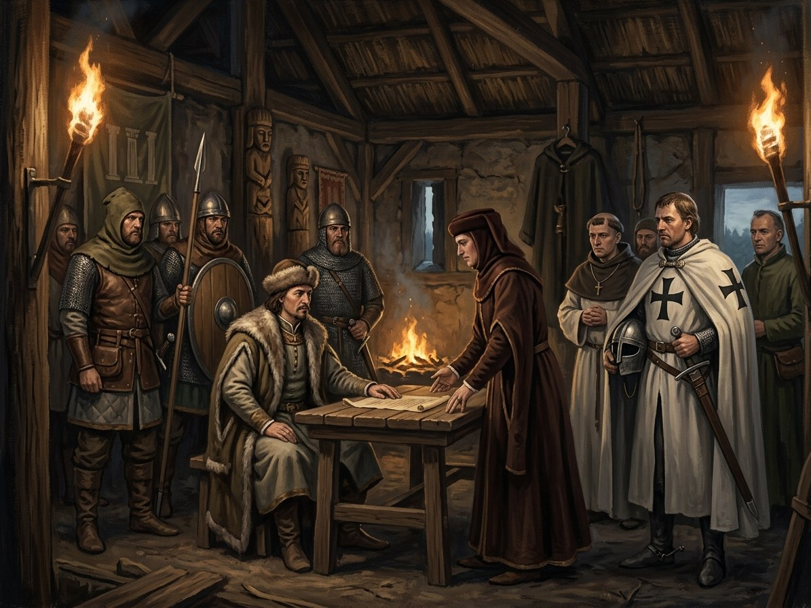

Union of Krėva¶
What the chronicles say [Historical record]¶
The Act of Krėva (Krewo) was issued by Jogaila at Krėva castle on 14 August 1385 and addressed to the Polish delegation; it was guaranteed by the seals of his brothers Skirgaila, Kaributas and Lengvenis and his cousin Vytautas. In exchange for marriage to Jadwiga he promised to convert Lithuania, to pay 200,000 florins to William of Austria to end her betrothal, to recover Poland’s lost lands and free Polish prisoners, and to „attach“ (applicare) the Lithuanian and Ruthenian lands to the Polish Crown. Historians disagree on applicare: it meant incorporation as a province (Koneczny, Łowmiański, Kolankowski), a fief (Adamus, Paszkiewicz) or only a personal union (Šapoka, Ivinskis). Only Jogaila made binding promises, so Kiaupienė argues it was not a final international treaty. The document was found in 1835 in the Kraków chapter archive; no contemporary chronicle mentions the meeting, and Dainauskas’s 1975 challenge to its authenticity has found little support (Wikipedia, Union of Krewo).
Union of Krėva

Union of Krėva · event¶
Tipas |
įvykis |
Metai |
1385-08-14 |
Status |
Istoriniai duomenys |
Knyga |
|
Pastaba |
Act of Krėva: Jogaila agrees to marry Jadwiga, Christianize Lithuania, and rule Poland (1385). |
Where: Krėva (on the map)
What really happened [The saga’s invention]¶
It is signed in the upper hall, directly above the cells where Kęstutis was strangled, one day short of three years after his death. Poles on one side and Lithuanian lords on the other, with a red cloth on the table; the guard spears along the well wall are rimed with white frost in August: the White Silence settles over the realm. Skirgaila, drunk, says he cannot sleep in this castle, it is too quiet. Vytautas, who knows he will have to refuse only once and has decided what to save the refusal for, goes down to the cell, finds the stone where the body lay a different colour, and sees his breath turn to winter. Henė sits on the stairs; his breath does not show.
Consequences¶
It leads to the baptism and coronation at Kraków in February 1386 (the marriage and baptism it promised).
Dramatisation¶
Book I ch. 28b „Krėvos Sutartis“ (Vytautas; 14 August 1385, harvest heat; a scene added by the author for review item H10).
Sąsajos¶
graph LR
ev_krakow_1386["Jogaila baptised, married, crowned in Kraków"]
ev_kreva_union["Union of Krėva"]
jogaila["Jogaila"]
kreva["Krėva"]
ev_kreva_union -->|Location| kreva
ev_kreva_union -->|Causes| ev_krakow_1386
jogaila -->|Took part in| ev_kreva_union
style ev_kreva_union stroke-width:3px